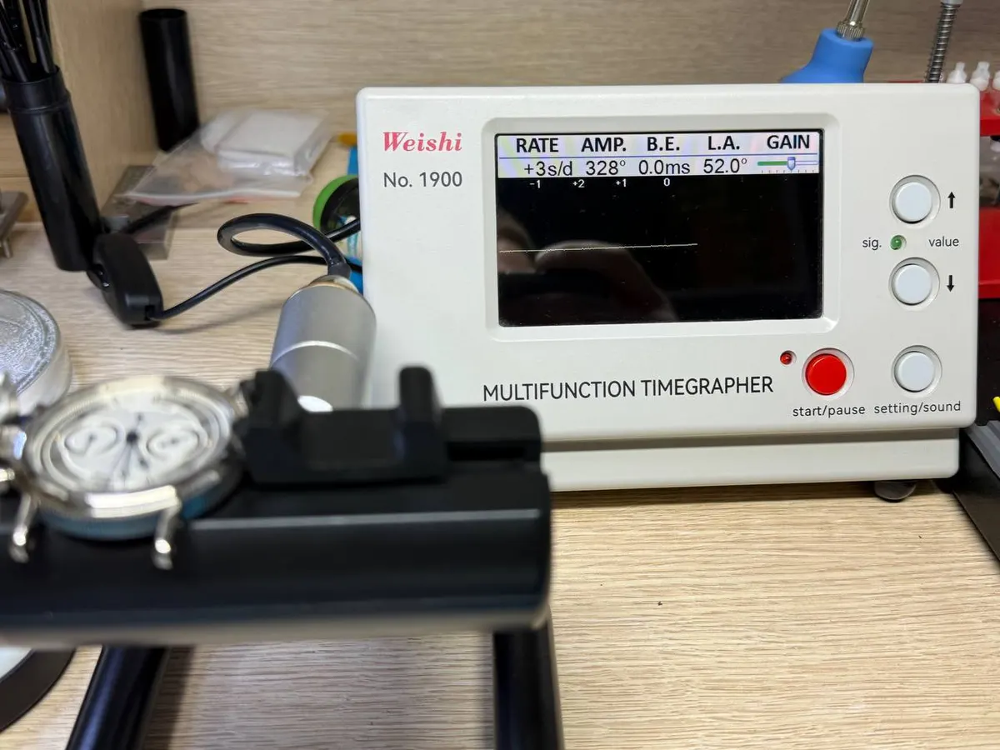
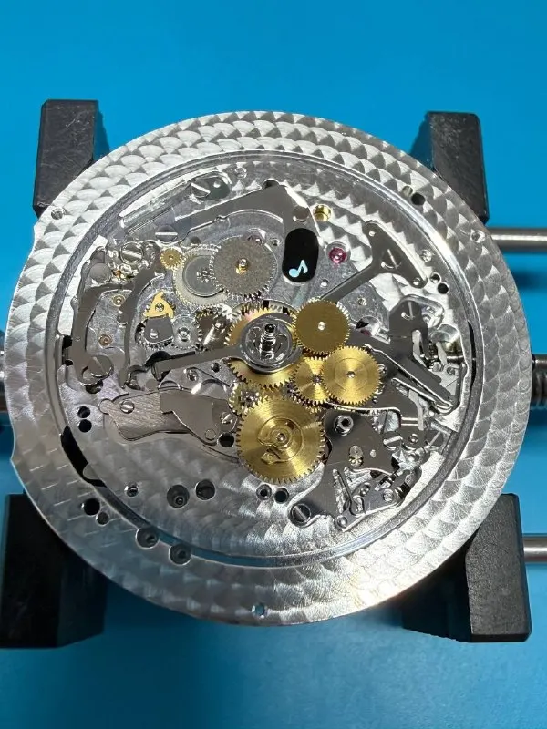
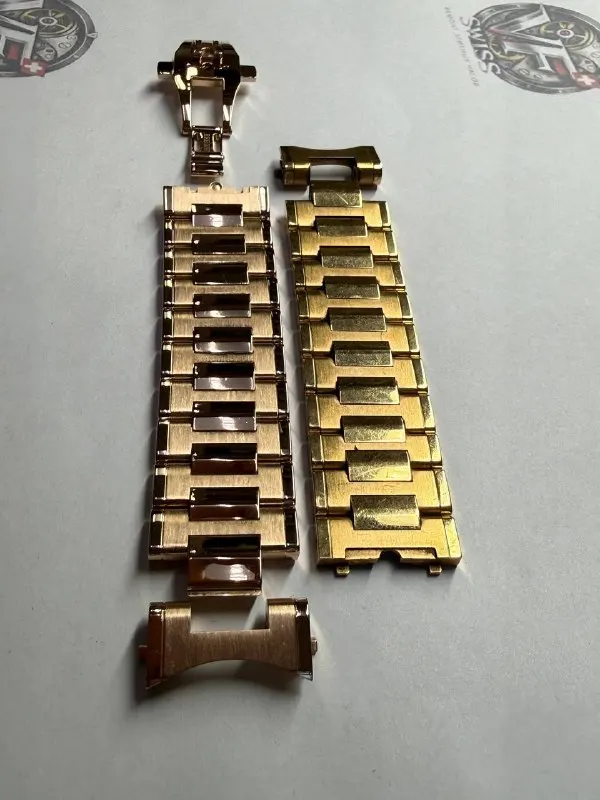
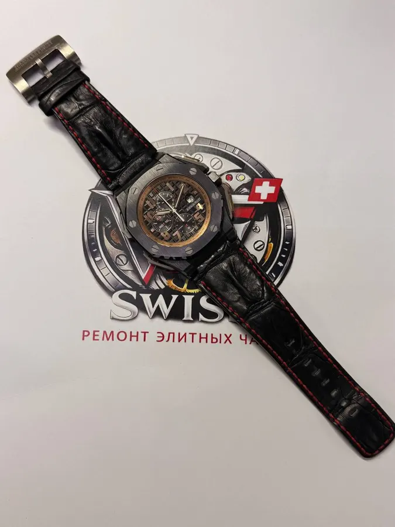
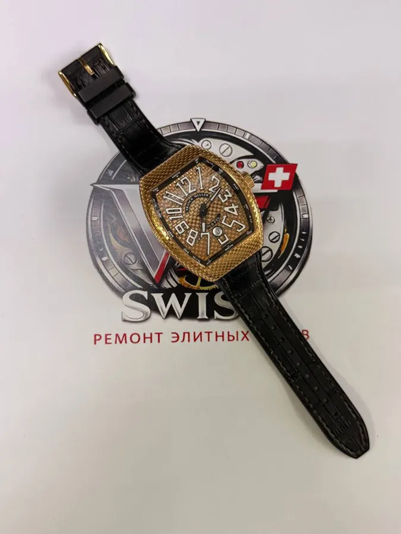

Услуги мастерской

Диагностика
Бесплатно. Осмотр и проверка хода на таймграфере — после неё понятно, что нужно часам и что можно не трогать.

Ремонт и обслуживание механизма
Полная разборка до последнего винта, замена изношенного на оригинальные детали, сборка и проверка хода.

Полировка
Полировка корпуса и браслета.

Элемент питания
Замена батарейки с сохранением герметичности: после замены часы проверяются на тестере герметичности.

Ремешки и браслеты
Ремешки и браслеты для ваших часов.

Замена стекла
Новое стекло вместо поцарапанного или разбитого.